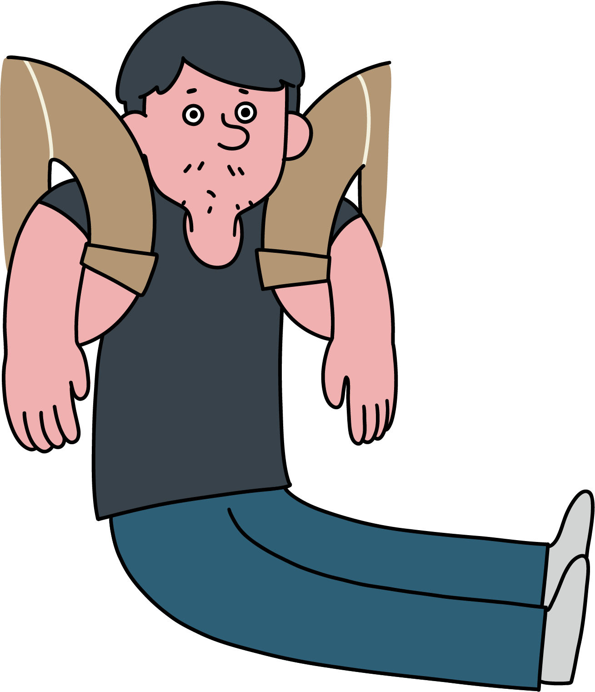

ตอนนั้นอยู่ๆ ตำรวจก็เข้ามา ตอน
แรกผมก็คิดว่าเป็นเพื่อนของพี่
หรือเปล่า ผมก็เลยสวัสดี สรุป
ว่าอ้าวไม่ใช่! เป็นสรรพสามิตมาจับ
ซึ่งผมก็โอเค ผมผิดจริง เค้าทำตามหน้าที่
แต่บางอย่างในวันนั้นมันทำให้ผมรู้สึกว่าเราเป็น
คนธรรมดา เราอยากมีอาชีพ เพื่อนผมที่อยู่ฮ่องกง
เค้าเป็น Brewer เค้าก็ดูแลลูกเมียได้ แต่ทำไม
ประเทศไทยมันทำไม่ได้ ผมรู้สึกว่าเราอยู่ในประเทศ
ที่รัฐบาลไม่ส่งเสริมศักยภาพของธุรกิจขนาดย่อม